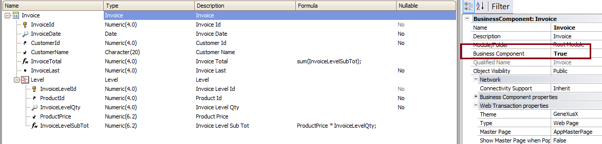
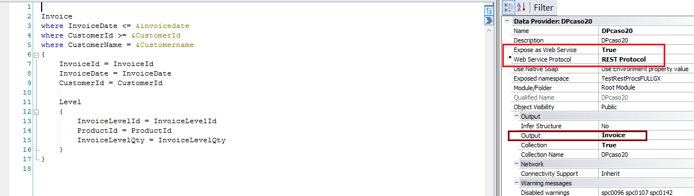

This document explains how to call a Data Provider (DP) exposed as Rest web services in GeneXus. First, let's see the basic guidelines: How do I call the Rest service in GeneXus?Use the HttpClient data type. Which HTTP method should I use to call the Rest Data Provider?The HTTP method used for calling the Data Provider is the HTTP GET verb. Which is the URL format to execute the GET verb?<ServerUrl>/<module>/<DP name>?<param1>=<value1>&<param2>=<value2>,..,<paramN>=<valueN> Where <param1>,<param2>,..,<paramN> are the parameters of the DP. The parameters should be separated by &. ExampleConsider the Invoice Business Component transaction, which looks as follows:  We have created a DP (called "DPCaso20"), whose Data Provider Output is the Invoice BC. Also, it's exposed as a Rest service. See the figure below:  The DP has the following rule: parm(in:&invoicedate,in:&CustomerId, in:&Customername); To call that Rest DP, we have the following code:
//http://server:8080/BaseUrl/rest/DPCaso20?Invoicedate=2013-11-14&Customerid=1&Customername=Francisco
&httpclient.Host= "server"
&httpclient.Port = 8080
&httpclient.BaseUrl = "BaseUrl"
&httpclient.secure = 0
&httpclient.Execute('GET','DPCaso20?Invoicedate=2013-11-14&Customerid=1&Customername=Francisco')
if &httpclient.StatusCode = 200
&result = &httpclient.ToString()
else
msg("Error: " + &httpclient.StatusCode.ToString())
endif
Download the sample from Sample consuming a Rest DP Note
See Also
Note:
|
| Backlinks | |
| Data Providers as Rest web services in GeneXus | Toc:Rest web services in GeneXus |